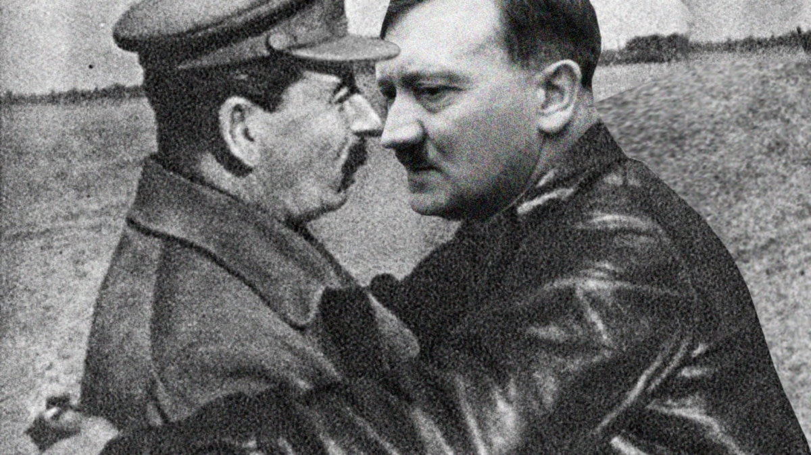
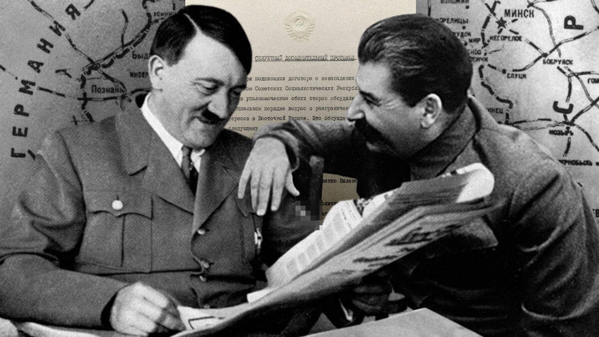
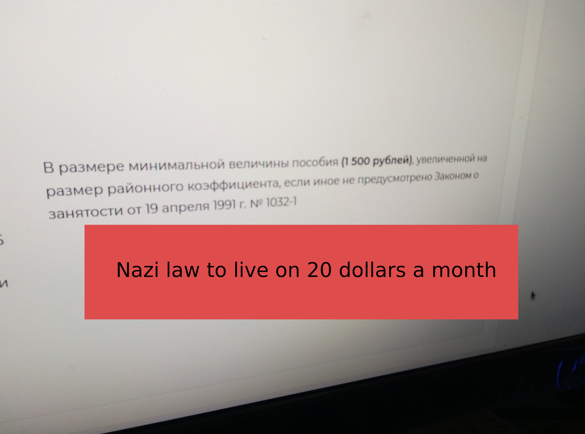

незаконная трудовая деятельность
illegal labor activity
подтвержденная яндексом коммунистической подстилкой. В реальной жизни Россия это беднейшее страна. А все благодаря москве, гитлеру и сталину, точнее их тайному тандему. Такой тандем гитлер+сталин=гонять соски запечатленных на фотоснимке.
confirmed by Yandex communist bedding. In real life, Russia is the poorest country. And all thanks to Moscow, Hitler and Stalin, or rather their secret tandem. Such a tandem Hitler + Stalin = drive the nipples captured in the photograph.
Работать нельзя! Даже если помыть за собой посуду после еды и не платить налоги, все штраф! Если посадить картошку, тоже незаконная трудовая деятельность! Работать нельзя! Это московский закон национал социалистов.
You can't work! Even if you wash the dishes after eating and do not pay taxes, everything is fine! If you plant potatoes, it is also illegal labor activity! You can't work! This is the Moscow law of the National Socialists.
Как сказал один президент: “денег нет, но вы держитесь за ядерную кнопку”. После таких слов волей, неволей начинаешь благодарить судьбу за то что повезло оказаться по великой удачи, случайным везением(эпическим), где нибудь в захолустье, а не в олицетворении национал социалистического бесчинства.
As one president said: "there is no money, but you hold on to the nuclear button." After such words, willy-nilly, you begin to thank fate for being lucky to be, by great luck, random luck (epic), somewhere in the outback, and not in the personification of national socialist excesses.
Нет нацизму!
No to Nazism!
Поэтому есть большая вероятность что каждый мАсквич попадет в ад. Или! За что еще могут трястись их жалкие душонки? Для москвича - эта никчемная жизнь будет олицетворять настоящий рай. Непривычный ни одному москвичу. Отсюда и такие национальные законы как: “прожиточный минимум, незаконная трудовая деятельность, штрафы, налоги, штраф за неуплату штрафа, штраф за неуплату налога по штрафу”. Маразм москвы зашкаливает на поборах и штрафах. Все потому что москва - это никчемное сборище швали со всей планеты. Их натура - это воровать, грабить, убивать мирных жителей, а потом придумать еще нацистские законы, даже чмошнее чем “прожиточный минимум”. мАсква(поганая) - сборище военных преступников третьего рейха. Перегруппировались и наносят свой крысиный удар по кошельку. Ведь это супер оружие московских крыс: “нищенство”. Как в супергеройских комиксах: у разных супер героев есть супер способности. У москвича в силу его никчемности и паразитического существования, есть только одна московская суперспособность: нищество! Не просто какое нибудь, а по Российским масштабом огромное! мАсковское нищенство, самое великое на всей планете! мАсквичи настолько паразиты. Что жить в аду их привычное существование. Такое же жалкое и никчемное как вся москва!
Therefore, there is a high probability that every maskvich will go to hell. Or! What else can their pathetic little souls tremble for? For a Muscovite, this worthless life will personify a real paradise. Unusual to any Muscovite. Hence such national laws as: “living wage, illegal labor activity, fines, taxes, fine for non-payment of fine, fine for non-payment of tax on fine”. The insanity of Moscow rolls over on requisitions and fines. All because Moscow is a worthless bunch of trash from all over the planet. Their nature is to steal, rob, kill civilians, and then come up with more Nazi laws, even worse than the “living wage”. Maskva (filthy) - a bunch of war criminals of the Third Reich. Regrouped and inflicted their rat strike on the wallet. After all, this is the super weapon of Moscow rats: “begging”. Like in superhero comics: different superheroes have super powers. A Muscovite, due to his worthlessness and parasitic existence, has only one Moscow superpower: poverty! Not just any, but huge on a Russian scale! Maskovskoe begging, the greatest on the planet! Muscovites are so parasites. That living in hell is their usual existence. The same miserable and useless as the whole of Moscow!
мАсквичи тупые крысы. И у москвы не хватает мозгов чтобы прикрывать свои национал социалистические бесчинства. И когда большинство Россиян находится под санкциями, крысы москвичи без зазрения совести ведут конференцию в котором свободно открывается заблокированный для всех Россиян инстаграм. Становится ясно что санкции действуют только на Россию, но ни на одного из москвичей. Нет ни одной санкции против крысиной мАсквы, национал социалистического сборища преступников третьего рейха.
Muscovites are stupid rats. And Moscow does not have enough brains to cover up their National Socialist atrocities. And when the majority of Russians are under sanctions, Muscovites rats without a twinge of conscience lead a conference in which Instagram, blocked for all Russians, is freely opened. It becomes clear that the sanctions apply only to Russia, but not to any of the Muscovites. There is not a single sanction against the rat maskva, the National Socialist gathering of criminals of the Third Reich.
Работать нельзя: штраф, незаконная работа: штраф! Незаконная предпринимательская деятельность: ШТРАФ! И вот настоящий снимок московского “прожиточного минимума в виде пособия по безработице”:
No work: fine, illegal work: fine! Illegal business activity: PENALTY! And here's a real snapshot of Moscow's "living wage in the form of unemployment benefits":
1500 рублей - это когда меньше\больше 20 баксов. То есть 20 долларов на месячное проживание. С расценками по которым нельзя купить не только еду, даже комнату снять не выйдет. Для нормального человека это вообще не деньги! Для человека, но не для москвича! Для москвы это деньги. После которого собирают конференцию где людям ищущим работу, высказывают угрозы, о пытках и суровом законе которому плевать на конституцию. Поганая мАсква! Живи ты на свои рубли где нибудь в сторонке от нормальных людей!
1500 rubles is when less\more than 20 bucks. That is $20 for a month's stay. With prices at which you can’t buy not only food, you won’t even be able to rent a room. For a normal person, this is not money at all! For a person, but not for a Muscovite! For Moscow, this is money. After which they convene a conference where people looking for work are threatened, about torture and a harsh law that does not care about the constitution. Filthy mask! You live on your rubles somewhere away from normal people!
Фейсбук может быть заблокирован потому что мАсква заплатила фейсбуку чтобы в стране было только промыв мозгов через поганый вконтакте на пару с деградирующим зомбоящиком. Блокировка комментариев - это проверенная схема национал социалистических преступников третьего рейха. Когда нет никакой свободы, нет мнения, а только угрозы. Как угрозы судами и обвинения в “незаконной трудовой деятельности”. После такой лекции угрожающей расправой, с судом и пытаками. После таких крысиных угроз теряется дар речи. Остаются одни оскорбления, о которых как раз очень красноречиво рассказывали на информативной лекции с незаконной трудовой деятельности. Штраф, за оскорбление должностного лица, когда он национал социалист и преступник третьего рейха. Штраф!
Facebook can be blocked because Moscow paid Facebook to have only brainwashing in the country through a filthy VKontakte paired with a degrading zomboyaschik. Comment blocking is a tried and tested scheme of the National Socialist criminals of the Third Reich. When there is no freedom, there is no opinion, only threats. Like threats of lawsuits and accusations of “illegal labor activity”. After such a lecture with threatening reprisals, with trial and torture. After such rat threats, the gift of speech is lost. Only insults remain, which were just very eloquently told at an informative lecture from illegal labor activity. A fine for insulting an official when he is a National Socialist and a criminal of the Third Reich. Fine!
Как помнит история сосо сталинашвили, до того как стал усатым сталином. Убил всех своих друзей и знакомых, всех подруг с кем раньше дружил. Расстрел был ключевой тактикой национал социалистического комунизменного нацизма. Так крысеныш сосо сталинашвили превращался в сталина! Не менее мерзкую крысы но уже пожирневшую и укоренившуюся в национал социалистическом тандеме с гитлером.
As the history of Soso Stalinashvili remembers, before he became a mustachioed Stalin. He killed all his friends and acquaintances, all the girlfriends with whom he used to be friends. Shooting was a key tactic of National Socialist Communist Nazism. So the little rat soso stalinashvili turned into a stalin! No less vile rats, but already fatter and rooted in the National Socialist tandem with Hitler.